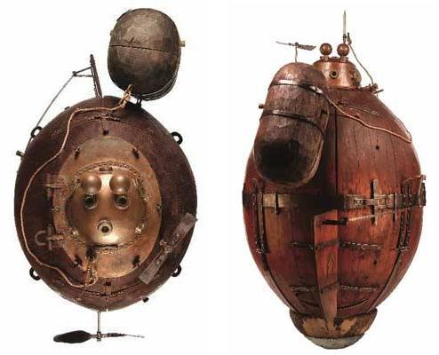

En 1775, David Bushnell diseñó el Turtle (Tortuga), que fue el primer submarino usado en combate, durante la Guerra de Independencia de los Estados Unidos, que mediante un destornillador fijaba bombas en los cascos de los barcos enemigos. Era pequeño y unipersonal, hecho de madera y cobre.